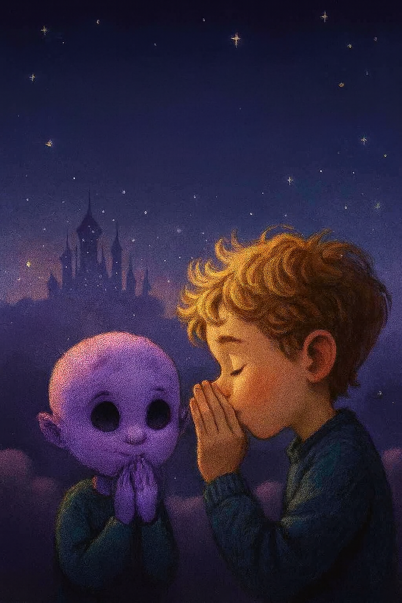

Whispers Beneath the Stars: Lukey and Nyari
Posted on November 25, 2025 · Category: TAOLB Universe Stories

Last night, just before the clouds swallowed the last light of Velari’s twin moons, Lukey Buke did something he’d never done before.
He whispered.
Not to his blue teddy bear. Not to the wind. But to a child with skin the color of starlight and eyes like polished obsidian, a little alien named Nyari, who had appeared beside him as if summoned by a dream he hadn’t finished having.
Nyari didn’t speak at first. She just listened. The two sat cross legged on a patch of moss that hadn’t been there the day before, surrounded by floating motes of light that pulsed like fireflies remembering a song.
Lukey leaned in, cupped his hand around his mouth, and whispered a word.
One word.
A word he didn’t understand, but somehow knew.
Nyari’s eyes widened. Her fingers trembled. And then, without warning, the sky above them shifted. The stars rearranged themselves. A shape began to form in the clouds, tall spires, glowing faintly, drifting across the heavens.
Aetherwyn. The Forbidden City.
Nyari turned to Lukey, her voice barely audible: “You remembered.”
And then just like that she vanished. No sound. No flash. Just a shimmer in the air and the lingering warmth of her presence.
Lukey sat alone, staring at the sky, the word still echoing in his chest.